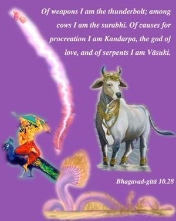
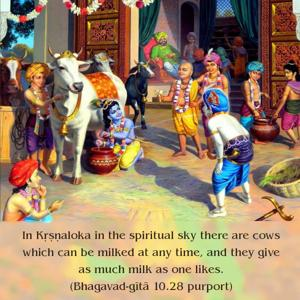
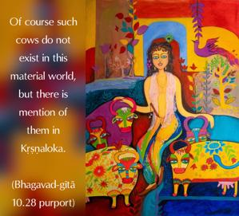
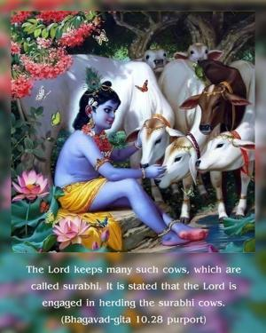

Of weapons I am the thunderbolt; among cows I am the surabhi. Of causes for procreation I am Kandarpa, the god of love, and of serpents I am Vāsuki.




The thunderbolt, indeed a mighty weapon, represents Kṛṣṇa’s power. In Kṛṣṇaloka in the spiritual sky there are cows which can be milked at any time, and they give as much milk as one likes. Of course such cows do not exist in this material world, but there is mention of them in Kṛṣṇaloka. The Lord keeps many such cows, which are called surabhi. It is stated that the Lord is engaged in herding the surabhi cows. Kandarpa is the sex desire for presenting good sons; therefore Kandarpa is the representative of Kṛṣṇa. Sometimes sex is engaged in only for sense gratification; such sex does not represent Kṛṣṇa. But sex for the generation of good children is called Kandarpa and represents Kṛṣṇa.